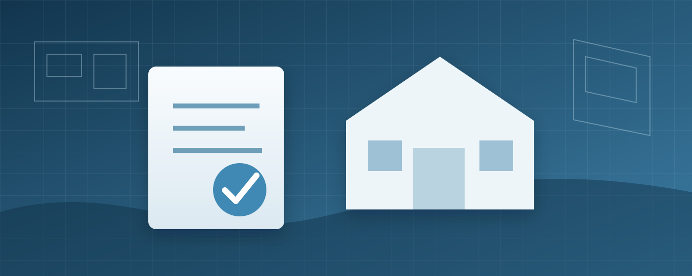

Habite-se em Sorocaba: o que é e como funciona o pedido

Um dos erros mais comuns na regularização é tratar o Habite-se como um documento isolado. Na prática, o pedido de conclusão depende do histórico do imóvel: o que foi aprovado, o que foi efetivamente construído, quais alterações ocorreram durante a obra e se a documentação cadastral acompanha a situação real.
- a Prefeitura informa que novas solicitações, substituições e pedidos de Habite-se devem ser feitos pelo sistema Aprova Digital;
- antes do protocolo, vale comparar rigorosamente a obra existente com o processo aprovado;
- o Habite-se pode ser uma etapa municipal importante, mas não necessariamente encerra a regularização perante Receita Federal e Registro de Imóveis.
O que o documento de conclusão representa
O procedimento municipal de conclusão relaciona a edificação executada ao processo de licenciamento. Por isso, não basta a casa estar fisicamente pronta. O Município precisa analisar o pedido conforme as regras aplicáveis, o projeto e a documentação exigida para aquela situação.
Para o proprietário, o documento é importante porque costuma compor a cadeia documental usada nas etapas seguintes da regularização da construção.
Antes de pedir o Habite-se, compare projeto e realidade
Uma obra raramente passa meses ou anos sem nenhuma alteração. Portas mudam, ambientes aumentam, coberturas são criadas, varandas são fechadas e áreas de serviço ganham anexos. Algumas mudanças são pequenas do ponto de vista de uso, mas podem modificar área construída, implantação, afastamentos ou outros parâmetros urbanísticos.
Por isso, antes de protocolar, é recomendável realizar um levantamento da situação atual e confrontá-la com os documentos existentes. Se houver divergências relevantes, o caminho pode envolver regularização ou substituição de projeto antes da conclusão.
Quais documentos antigos ajudam
Separe tudo o que encontrar
- projeto aprovado e eventuais substituições;
- alvará ou licença de construção;
- levantamentos antigos;
- carnês e dados cadastrais do imóvel;
- matrícula do Registro de Imóveis;
- documentos de ampliações ou reformas posteriores;
- comunicações e exigências anteriores da Prefeitura.
Mesmo um documento antigo que pareça não resolver o processo pode ajudar a reconstruir o histórico e evitar que a análise comece do zero.
O Aprova Digital em Sorocaba
A página oficial de Aprovação de Projetos da Prefeitura de Sorocaba direciona novas solicitações, pedidos de substituição e pedidos de Habite-se ao Aprova Digital. O sistema organiza o protocolo eletrônico e a comunicação de exigências dentro dos processos disponibilizados pelo Município.
A lista de documentos e as verificações dependem da natureza do pedido. Por isso, copiar a documentação de outro imóvel nem sempre funciona: o histórico, uso, área e processo anterior podem ser diferentes.
O que acontece se a obra não estiver igual ao aprovado
Não é recomendável simplesmente protocolar ignorando a divergência. Primeiro é preciso caracterizar a diferença e verificar sua compatibilidade com a legislação aplicável. Dependendo do caso, pode ser necessário atualizar o projeto, regularizar a ampliação ou tratar outra pendência antes de concluir o processo.
Isso é especialmente relevante em imóveis antigos, nos quais diferentes etapas podem ter sido executadas em períodos e regras distintas.
Habite-se, Receita Federal e Cartório são etapas diferentes
| Esfera | O que normalmente se resolve |
|---|---|
| Prefeitura | Situação urbanística, licenciamento e conclusão/regularização municipal. |
| Receita Federal | Cadastro Nacional de Obras, aferição no Sero e certidão de regularidade fiscal da construção, quando aplicável. |
| Registro de Imóveis | Averbação para fazer a construção constar na matrícula. |
Essas etapas se relacionam, mas não são a mesma coisa. É possível encontrar imóvel com cadastro municipal atualizado e matrícula desatualizada; também é possível haver documento municipal de conclusão e ainda faltar a regularização fiscal da obra.
Por que mapear o processo completo antes de começar
Quando o objetivo final é vender, financiar ou averbar, resolver apenas a primeira pendência pode gerar frustração. Um diagnóstico completo identifica onde o processo termina para o cliente e quais documentos serão necessários ao longo do caminho.
Vai solicitar Habite-se em Sorocaba?
Antes do protocolo, vale conferir se a construção existente, o projeto aprovado e a área documental contam a mesma história.
Leia também
- INSS de obra: CNO, Sero e certidão
- Averbação da construção no Cartório
- Regularização de imóvel em Sorocaba
Fontes oficiais
Precisa de engenharia ou arquitetura em Sorocaba e região?
Conte o que está acontecendo no seu imóvel. O primeiro passo é definir corretamente o problema antes de escolher o serviço.